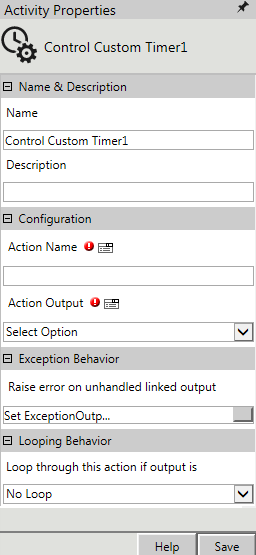
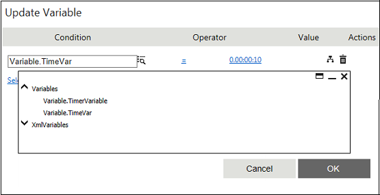
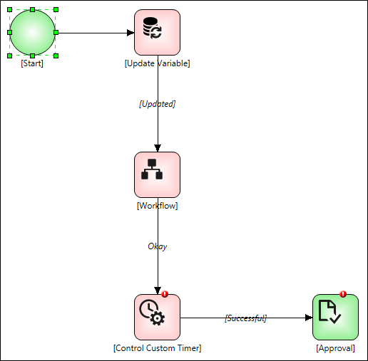

No
Activity description:
The Control Custom Timer Activity can be used to control a Set Custom Timer activity in the workflow dynamically. There can be multiple Control Custom Timer activities controlling a single Set Custom Timer activity at different stages of the workflow process.
Action Properties:
The Control Custom Timer activity has to be configured by specifying appropriate values for the different properties in the Action Properties area. The Action Properties can be accessed by clicking on the Action Properties tool in the Tool Bar or by selecting the appropriate option from the right click menu for the Control Custom Timer activity. The Action Properties are organized under the following groups of related properties. The properties under each group are described in this topic.

Name & Description
The properties in the Name & Description group have been described below. You can use these properties to specify the name and description for the activity.
Name - This property can be used to specify a name for the activity.
Property Type: Optional (This property needs to be set only if necessary.)
Description - This property specifies a brief description to be displayed for the activity.
Property Type: Optional (This property needs to be set only if necessary.)
Configuration
The properties in the Configuration group have been described below. You can use these properties to configure the
functionality of the activity.
Action Name - This property allows the user to specify the name of the Set Custom Timer activity to be controlled.
Property Type: Mandatory (This property must be set if the activity is to be executed.)
Action Output - This property allows the user to specify the output of the Control Custom Timer activity. The drop down has three options – Pause, Resume, and Stop – to respectively pause, resume or stop the Set Custom Timer activity being controlled.
Property Type: Mandatory (This property must be set if the activity is to be executed.)
Note: When you pause an activity, the activity is paused, but the status of the activity does not change.
Looping Behavior
The property in the Looping Behavior group has been described below. You can use this property to specify the looping behavior of the activity.
Loop through this action if output is - This property is used to specify the condition for looping the activity by selecting an activity output from the drop down.
Property Type: Optional (This property needs to be set only if necessary.)
Activity outputs:
The Control Custom Timer Activity returns the following values -
Successful: Displayed when the activity is successful in controlling the specified Set Custom Timer activity.
UnSuccessful: Displayed when the activity is unsuccessful in controlling the specified Set Custom Timer activity.
Example:
To control a Set Custom Timer activity in the workflow (See the workflow given below)
Step 1: In Start, declare "timevar" as String type.
Step 2: In Update Variable, assign specific value to "timevar" string.

Step 3: In Set Customer Timer activity used to schedule the execution of tasks at specified times, set using the corresponding workflow variable.
Step 4: In ControlCustomTimer you can set the name of the Set Custom Timer activity to be controlled in Action Name (Here SkeltaWF is Set Custom Timer) and in Action Output you can Resume the workflow.
Output:

Exception Behavior
Each activity has the Raise Error on Unhandled Linked Output property on click of which, it shows all the default configured mapped error outputs in red with their check boxes selected.
See Mapped Error Output for more details.